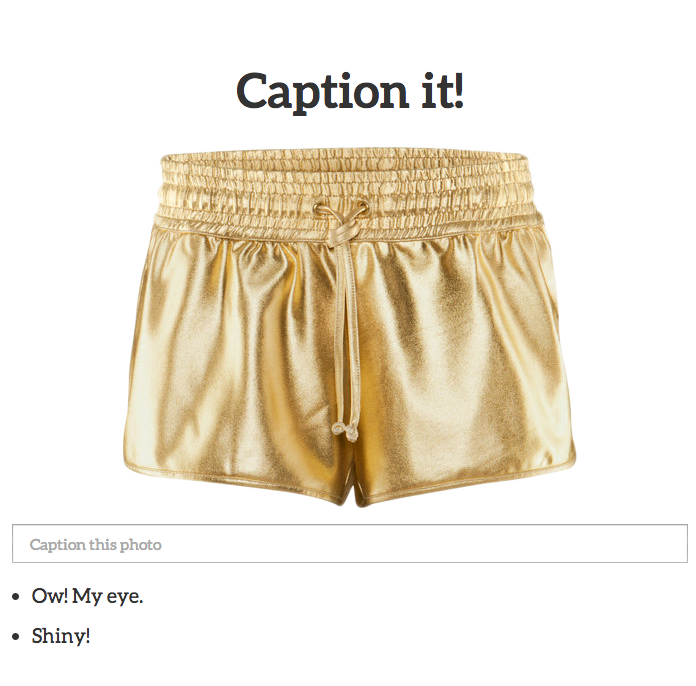
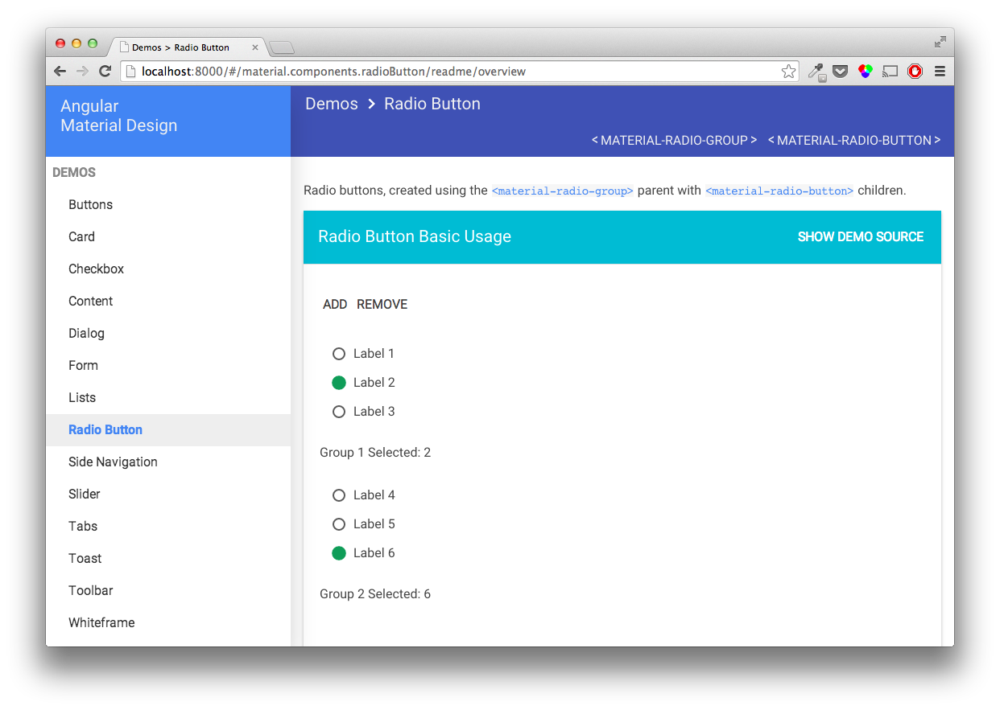
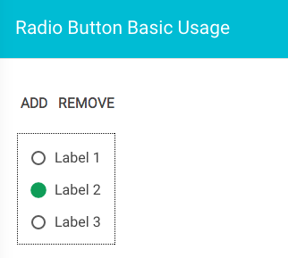

"Sweet interface." (not!)
What is Accessibility?
Everyone can perceive, understand, navigate, and interact with the Web, and they can contribute to the Web.
80 million Europeans with disabilities
15% of the European population
Accessibility is about
PEOPLE.
JavaScript for Everybody
Accessibility of JavaScript MVCs
Created by Marcy Sutton / @marcysutton
Best framework?

Model
View
Controller
Router
*
WHATEVER
Are your apps accessible?
It could depend on:
- The framework*
- Screen reader
- Browser
- Your code*
* Things you can control, to varying degrees
#a11y in single-page apps
- Manage ARIA attributes
- Enable the keyboard
- Handle focus
- Write meaningful HTML
Accessible
Rich
Internet
Applications
Expands HTML's semantic vocabulary
ARIA Core Components 1 of 3
Roles
What does this thing do?
<div role="img" style="background-image..."></div>
ARIA Core Components 2 of 3
States
The current condition of this particular thing
<material-input aria-disabled="true"></material-input>
ARIA Core Components 3 of 3
Properties
The nature of the current object
<taco-textarea aria-required="true"></taco-textarea>
Using Roles
- They're element types
- They're landmarks
- Start with native HTML tags
- Read the documentation
- Don't overdo it
Application Role
Disables a screen reader’s “virtual cursor”
<dance-detector role="application"></dance-detector>
Don't Do This
<body role="application">
Document or Application?
<sparkle-party>
<h2>Do you like to dance?</h2>
<button class="lets-dance">I wore my party pants</button>
<disco-ball>
<canvas></canvas>
<p aria-live="polite" class="disco-transcript"></p>
</disco-ball>
</sparkle-party>
Enabling the keyboard
Tab Index
<div tabIndex="0"></div>
What Not To Do
<div class="menu" ng-click="toggleMenu()"></div>
Close, but no keypress.
<dance-button tabIndex="0"
ng-click="spicy123(go);">
DANCE!
</dance-button>
Everybody dance!
<dance-button tabIndex="0" role="button"
ng-click="letsGetDown(toThat)"
ng-keypress="letsGetDown(toThat)">
DANCE!
</dance-button>
Loading beat data...
Keyboard Accessibility
One Simple Trick
[tabIndex="0"] {
color: $linkColor;
&:focus, &:hover {
color: $linkActiveColor;
outline: default;
}
}
Dance Break
Tom Dale, Co-Creator of Ember.js
and Wearer of Party Pants
Photo by Matthew Bergman
Custom Elements
Ember.js
{{party-pants}}
App.PartyPantsComponent = Ember.Component.extend({
attributeBindings: ['tabIndex'],
tagName: 'party-pants',
ariaRole: 'article',
tabIndex: function() {
return this.get('active') ? 0 : -1;
}.property('active')
});
Ember Custom Component demo
Make your framework do the heavy lifting 1 of 3
// AngularUI Bootstrap
<accordion-group
is-open="status.open"
is-disabled="status.isDisabled">
</accordion-group>
Make your framework do the heavy lifting 2 of 3
// AngularUI Bootstrap
<accordion-group
aria-expanded="true"
is-open="status.open"
aria-disabled="false"
is-disabled="status.isDisabled">
</accordion-group>
Make your framework do the heavy lifting 3 of 3
Example where ARIA attributes are the default
// AngularUI Bootstrap
<accordion-group
ng-expanded="status.open"
ng-disabled="status.isDisabled">
</accordion-group>
Angular.js Material Design
Angular Material Radio Buttons

<material-radio-group ng-model="data.group">
<material-radio-button value="1">
Label 1
</material-radio-button>
<material-radio-button value="2">
Label 2
</material-radio-button>
</material-radio-group>
Angular Material Radio Buttons (cont'd)
function materialRadioGroupDirective() {
element.attr({
'role': 'radiogroup',
'tabIndex': '0'
})
.on('keydown', keydownListener);
function keydownListener(ev) {
if (ev.which === Constant.KEY_CODE.LEFT_ARROW) {
rgCtrl.selectPrevious(element);
}
else if (ev.which === Constant.KEY_CODE.RIGHT_ARROW) {
rgCtrl.selectNext(element);
}
}
}
function materialRadioButtonDirective($expectAria) {
element.attr('role', 'radio');
$expectAria(element, 'aria-label', element.text());
var lastChecked;
attr.observe('value', render);
function render() {
var checked = (rgCtrl.getViewValue() === attr.value);
if(checked === lastChecked){ return; }
lastChecked = checked;
element.attr('aria-checked', checked);
}
}
Make it sparkle.
Thanks, JSConf EU! -@marcysutton